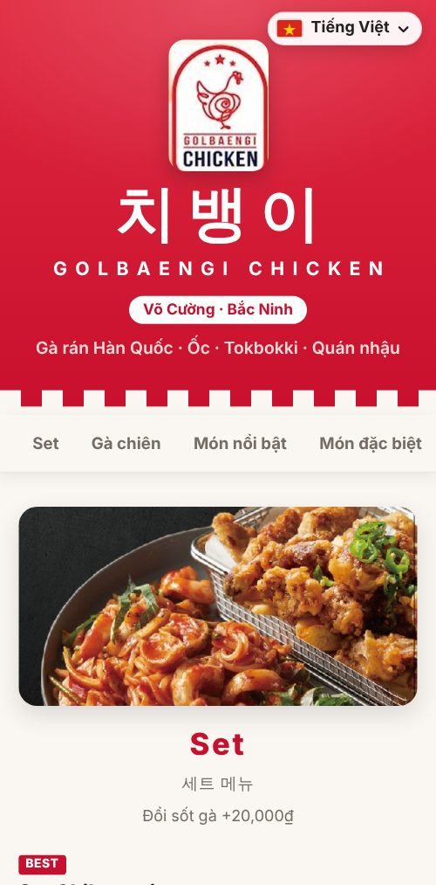
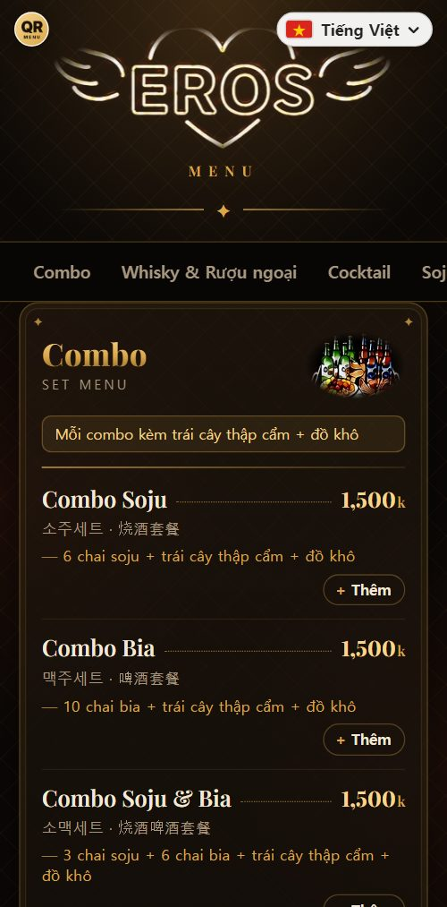
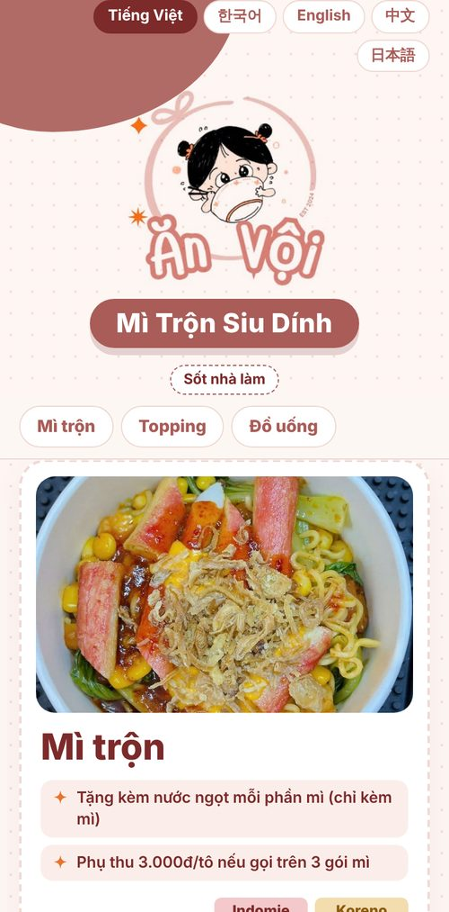
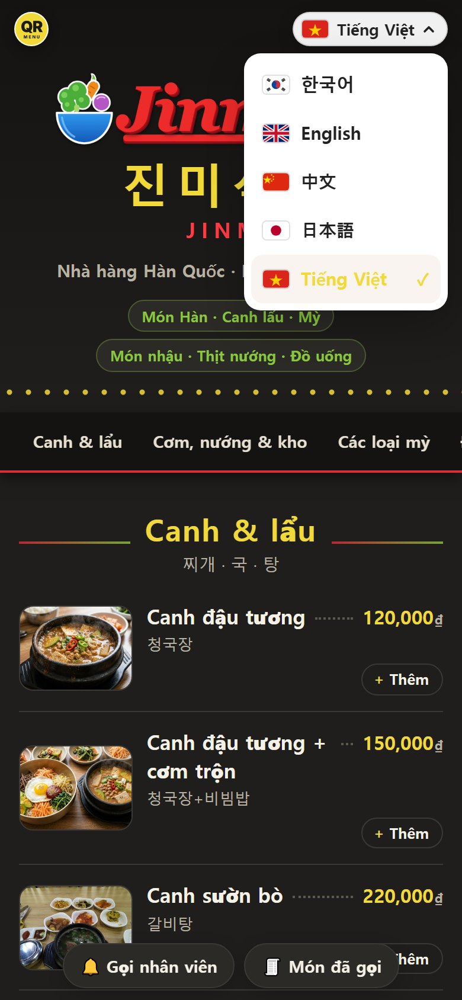
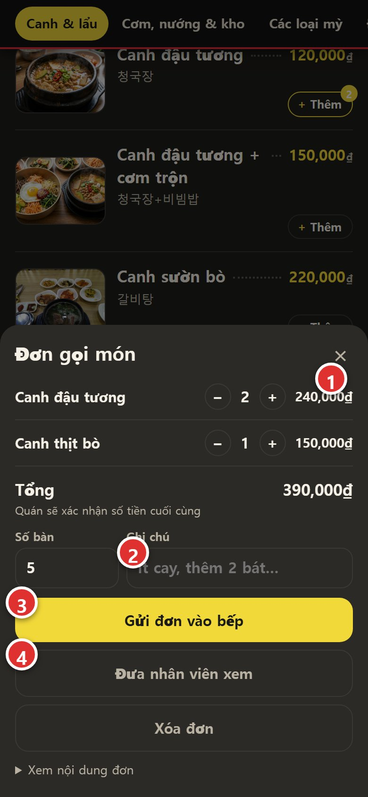
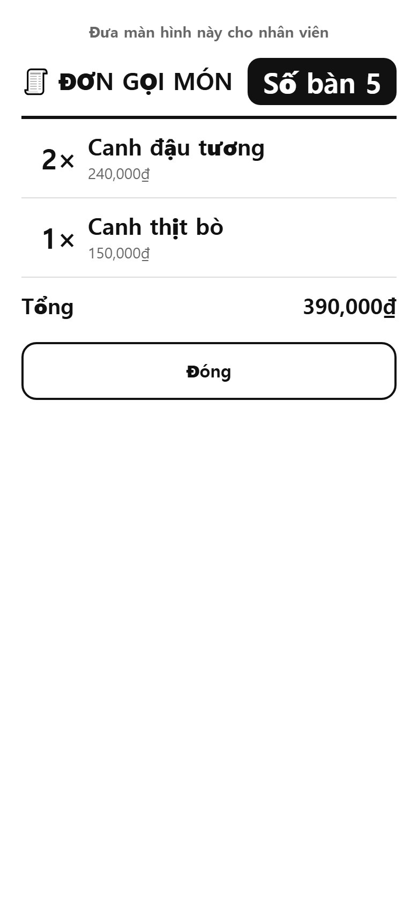
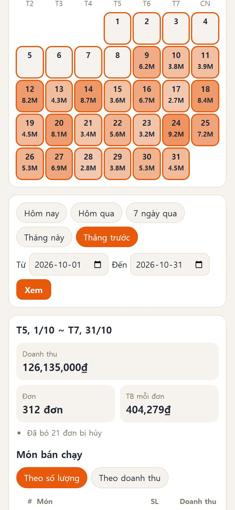
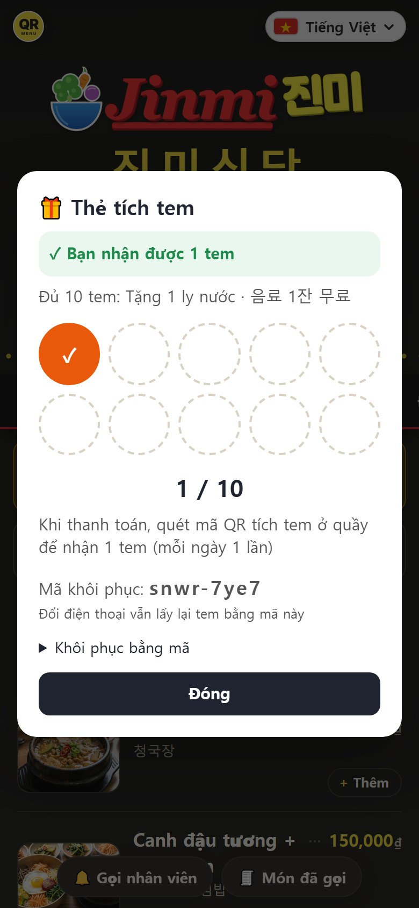

Công ty đưa thực đơn nhà hàng Việt Nam lên màn hình điện thoại
Thực đơn QR 5 ngôn ngữ · Trang quản lý cho chủ quán · Gọi món tới bếp Đề xuất đầu tư

147 quánđã có thực đơn QR (trong 5 tuần)
5 ngôn ngữHàn · Việt · Anh · Trung · Nhật, tự động chuyển
1 tỷ đồngsố vốn kêu gọi đầu tư
Tháng 11/2026 · Bảo mật (dùng để thẩm định đầu tư)
CONTENTS
Mục lục
01Tổng quan3
02Vấn đề các nhà hàng đang gặp4
03Giải pháp của chúng tôi5
04Xem qua sản phẩm6
05Thị trường: vì sao là Việt Nam, vì sao là bây giờ8
06Kết quả đã đạt được9
07Lợi thế cạnh tranh10
08Bảng giá và cấu trúc doanh thu12
09Hiệu quả kinh tế của một quán13
10Chiến lược bán hàng14
11Kế hoạch tài chính 3 năm15
12Kế hoạch sử dụng vốn18
13Điều kiện đầu tư và quyền lợi nhà đầu tư19
14Lộ trình phát triển và tầm nhìn21
15Rủi ro và cách ứng phó22
16Đội ngũ và cách vận hành23
17Cùng đồng hành24
Cách đọc bản đề xuất này
Các con số chia làm hai loại. Kết quả thực tế (việc đã làm) là số liệu được xác nhận từ nhật ký công việc của chúng tôi. Kế hoạch (việc sắp làm) là số liệu tính theo các giả định ở trang 15–17. Số liệu thị trường đều có ghi nguồn ở cuối trang. Đơn vị tiền tệ là đồng Việt Nam (VND).
01 · SUMMARY
Tổng quan
Chúng tôi cung cấp, theo hình thức thuê bao hàng tháng, thực đơn QR tự động đổi sang ngôn ngữ trên điện thoại của khách, cùng bộ công cụ vận hành, dành cho các nhà hàng đông khách nước ngoài tại Việt Nam.
😥
Vấn đề
Khách Hàn, Trung, Nhật và phương Tây không đọc được thực đơn nên gọi món chậm và dễ nhầm. Thực đơn giấy phải in lại mỗi khi đổi giá.
📱
Giải pháp
Khách quét mã QR trên bàn là mở được thực đơn 5 ngôn ngữ, không cần cài ứng dụng. Chủ quán đổi giá, báo hết món, thay ảnh bằng điện thoại chỉ trong 1 phút.
✅
Kết quả
Từ thực đơn đầu tiên ngày 14/10/2026, chỉ trong 5 tuần đã làm 147 quán (Hà Nội 81, Bắc Ninh 63...). Chức năng gọi món tới bếp và tem tích điểm khách quen đã bắt đầu vận hành tại quán đầu tiên.
💰
Cách kiếm tiền
Phí thiết kế (2 – 4 triệu đồng, thu một lần) + phí quản lý 300.000 đồng/tháng (doanh thu lặp lại) + dịch vụ tùy chọn (gọi món, tên miền). Càng nhiều quán, dòng tiền vào mỗi tháng càng dày.
1 tỷ đồngvốn kêu gọi đầu tư
816 quánquán thuê bao cuối năm 3 (kịch bản cơ sở)
3,79 tỷ đồngdoanh thu năm 3 (kịch bản cơ sở)
18 thángbắt đầu có lãi hàng tháng (kịch bản cơ sở)
Đề xuất đầu tư
Góp vốn cổ phần 1 tỷ đồng. Số vốn dùng cho nhân sự bán hàng (1 năm), marketing và vận hành pháp nhân. Tỷ lệ cổ phần sẽ do hai bên thỏa thuận theo định giá công ty; trang 19 có ví dụ minh họa. Chúng tôi báo cáo nhanh hằng tháng và báo cáo tài chính hằng quý, và nhà đầu tư có thể tự xem doanh thu, số quán ngay trên màn hình quản lý.
02 · PROBLEM
Vấn đề các nhà hàng gặp mỗi ngày
Khách nước ngoài đến Việt Nam ngày càng đông, nhưng thực đơn của nhà hàng vẫn chỉ là một tờ giấy.
🌏
① Khách không đọc được thực đơn
Trước thực đơn chỉ có tiếng Việt hoặc tiếng Hàn, khách nước ngoài phải chỉ tay vào hình hoặc mở ứng dụng dịch. Gọi món chậm, và những món đắt mà họ không hiểu thì họ không gọi.
🖨️
② Đổi giá là phải in lại
Giá nguyên liệu tăng thì phải đổi giá, nhưng in lại thực đơn vừa tốn tiền vừa mất thời gian. Vì vậy nhiều quán sửa tay bằng bút, hoặc để nguyên giá cũ.
🗣️
③ Nhân viên và khách không hiểu nhau
Nghe nhầm món nên ra sai món, phải làm lại, và khách để lại lời phàn nàn trên đánh giá Google.
📉
④ Chủ quán không nắm được số liệu
Món nào bán chạy, khách nước nào đến, giờ nào đông, tất cả chỉ biết theo cảm tính. Cũng không có công cụ nào để chăm sóc khách quen.
Những gì chúng tôi thấy tại hiện trường
Khi làm thực đơn cho 147 quán, chúng tôi đã trực tiếp đọc ảnh thực đơn trên Google Maps. Rất thường gặp: cùng một quán nhưng mỗi ảnh một giá, giá từ nhiều năm trước vẫn còn treo, hoặc tên món chỉ có một ngôn ngữ. Nghĩa là khách chưa có một thực đơn chính xác để xem trước khi đến quán.
03 · SOLUTION
Giải pháp của chúng tôi
Chỉ cần gửi ảnh thực đơn, chúng tôi làm trọn gói thực đơn QR 5 ngôn ngữ phù hợp với phong cách quán, cùng bộ công cụ vận hành.
① Gửi ảnhChỉ cần ảnh thực đơn giấy
→
② Đội AI thực hiệnĐọc món, dịch, thiết kế
→
③ Chủ quán duyệtXem bản mẫu trên điện thoại
→
④ Lắp mã QRIn thẻ để bàn
→
⑤ Quản lý hàng thángChỉnh sửa · báo cáo · gọi món
🌐
Tự động đổi ngôn ngữ
Nhận biết ngôn ngữ điện thoại của khách và mở ngay bằng tiếng Hàn, Việt, Anh, Trung hoặc Nhật.
📲
Không cần cài ứng dụng
Chỉ cần quét QR bằng camera. iPhone và Android đều dùng được.
✏️
Chủ quán tự chỉnh sửa
Sửa giá, báo hết món, đổi ảnh, giờ mở cửa trên điện thoại, khoảng 1 phút sau là hiện trên màn hình khách.
🧾
Phiếu gọi món · Bếp
Món khách chọn được hiển thị cỡ lớn bằng ngôn ngữ của nhân viên, hoặc gửi thẳng tới màn hình bếp và máy in hóa đơn.
📊
Xem số liệu
Báo cáo lượt xem (quốc gia, ngôn ngữ, thiết bị), lịch doanh thu, món bán chạy, giờ đông khách, tất cả trong một màn hình.
🎁
Giữ chân khách quen
Tem tích điểm và hộp góp ý giúp khách quay lại, đồng thời nghe trước những phàn nàn trước khi chúng thành đánh giá Google.
Điểm mấu chốt: lắp một lần, dùng mỗi ngày
Thực đơn được dùng mỗi ngày quán mở cửa. Khi mã QR đã dán lên bàn thì rất khó đổi sang nhà cung cấp khác (phải in lại thẻ, đào tạo lại nhân viên), vì vậy chúng tôi kỳ vọng thuê bao sẽ được duy trì lâu dài.
04 · PRODUCT
Xem qua sản phẩm ① Màn hình của khách
Đây là các thực đơn đang hoạt động thực tế. Mỗi quán được thiết kế giống với biển hiệu và thực đơn của chính quán đó.
Sutkkui · Quán nướng · Bắc Ninh
GAMASOT · Nhà hàng Hàn · Hà Nội

EROS · Bar · Bắc Ninh

Ăn Vội · Mì trộn · Quảng Ngãi

Đổi ngôn ngữ
Phóng to ảnh món

Phiếu gọi món

Cho nhân viên xem (chữ lớn, đúng ngôn ngữ nhân viên)
Các màn hình hàng dưới là ví dụ chụp từ dữ liệu quán thử nghiệm.
04 · PRODUCT
Xem qua sản phẩm ② Màn hình chủ quán · Bếp
Không dừng lại ở thực đơn. Các công cụ cần cho việc vận hành nhà hàng được nối liền thành một hệ thống.
Màn hình sửa thực đơn
Màn hình bếp · Đơn mới

Tóm tắt doanh thu

Tem tích điểm
Chức năng
Tình trạng hiện nay
Thực đơn 5 ngôn ngữ · Thẻ QR · Hình ảnh quảng bá mạng xã hội
Đang hoạt động (147 quán)
Chủ quán tự sửa (giá · hết món · ảnh · giờ mở cửa) · Báo cáo lượt xem
Đang hoạt động
Giỏ hàng · Phiếu gọi món · Gọi món qua Zalo
Đang hoạt động (quán đã ký hợp đồng)
Màn hình bếp nhận đơn · Tem tích điểm · Hộp góp ý của khách
Quán đầu tiên (Jinmi Sikdang) bắt đầu vận hành · 18/11/2026
Gọi nhân viên · Sơ đồ bàn · Lịch doanh thu · Máy in hóa đơn
Đã phát triển xong · Đang chạy thử tại quán thực tế
Trang tìm quán (qrmenuasia.com) · Hiển thị trên tìm kiếm Google
Đang hoạt động
Các màn hình trên là ví dụ chụp từ dữ liệu quán thử nghiệm. Chúng tôi cũng đã biên soạn sẵn sổ tay hướng dẫn cho chủ quán (bản tiếng Hàn và tiếng Việt, mỗi bản 56 trang).
05 · MARKET
Thị trường: vì sao là Việt Nam, vì sao là bây giờ
Nhà hàng thì nhiều, khách nước ngoài đạt mức cao nhất từ trước đến nay, và các quán đang tìm cách cắt giảm chi phí.
329.000nhà hàng, quán cà phê tại Việt Nam (ước tính cuối 2025)
21,2 triệulượt khách quốc tế năm 2025 (cao nhất từ trước đến nay, +20%)
4,3 triệutrong đó là người Hàn Quốc (thứ 2, 20,5%)
1.141dự án đầu tư của Hàn Quốc tại Bắc Ninh (trên 15,7 tỷ USD)
📈 Khách nước ngoài ngày càng đông
Năm 2025, Việt Nam đón khoảng 21,2 triệu lượt khách quốc tế, mức cao nhất từ trước đến nay; Trung Quốc (5,3 triệu) và Hàn Quốc (4,3 triệu) đứng thứ nhất và thứ hai. Ngôn ngữ trên thực đơn gắn trực tiếp với doanh thu.
🏭 Nơi tập trung doanh nghiệp Hàn Quốc
Bắc Ninh là nơi Hàn Quốc là nhà đầu tư nước ngoài lớn nhất, riêng Samsung đã có hơn 45.000 lao động. Các nhà hàng phục vụ khách Hàn tập trung ở đây, nên đây là thị trường đầu tiên của chúng tôi.
💸 Các quán đang tìm cách giảm chi phí
Nửa đầu năm 2025, hơn 50.000 nhà hàng phải đóng cửa vì áp lực chi phí và các nguyên nhân khác. Họ cần công cụ giúp giảm chi phí in ấn, nhầm lẫn khi gọi món và nhân công.
🎯 Ước tính quy mô thị trường
Chỉ cần 1% nhà hàng, quán cà phê (khoảng 3.300 quán) dùng gói quản lý hàng tháng, doanh thu lặp lại đã đạt khoảng 1,07 tỷ đồng mỗi năm (tính theo 270.000 đồng/tháng).
Nguồn: số lượng nhà hàng — báo cáo thị trường F&B Việt Nam 2025 của iPOS.vn (VIR, Vietstock đưa tin, 04/2026, số ước tính từ khảo sát mẫu) · số quán đóng cửa nửa đầu năm — báo cáo 6 tháng đầu năm của iPOS và Nestlé (SGGP, 2025) · lượt khách — thống kê Việt Nam (Vietnam News, VietnamNet, 01/2026) · đầu tư tại Bắc Ninh và số lao động Samsung — Vietnam News, The Investor (2026). Ước tính quy mô thị trường là tính toán của chúng tôi.
06 · TRACTION
Kết quả đã đạt được
Đây là thành quả của 5 tuần làm việc, không có vốn, chỉ một người cùng đội AI.
147 quánđã làm thực đơn
5 tuầnkể từ thực đơn đầu tiên (14/10)
81 · 63quán ở Hà Nội · Bắc Ninh
149địa chỉ cho tìm kiếm Google (147 quán + 2 trang chính)
14/10/2026 · Thực đơn đầu tiên
Quán nướng Sutkkui ở Bắc Ninh: 5 ngôn ngữ, tự nhận biết ngôn ngữ điện thoại, thẻ QR để bàn.
Tuần 3 tháng 10 · Quán ký hợp đồng và công cụ vận hành
Làm cho các quán do chủ quán đặt (khách sạn, quán gà, quán phở...), hoàn thiện nhật ký lượt xem, màn hình quản lý và màn hình chủ quán tự chỉnh sửa.
Cuối tháng 10 · Khung chuẩn và đội AI
Làm mọi quán theo cùng một cấu trúc (khung chuẩn), và chia các AI phụ trách đọc thực đơn, dịch, thiết kế, kiểm tra để tăng tốc độ làm việc.
Tháng 11 · Mở rộng chức năng vận hành
Màn hình gọi món tới bếp, máy in hóa đơn, lịch doanh thu, tem tích điểm, hộp góp ý của khách, sổ tay chủ quán (tiếng Hàn và tiếng Việt, mỗi bản 56 trang).
Hiện nay · Trang tìm quán
Trên qrmenuasia.com, có thể tìm 147 quán theo khu vực và loại hình. Mỗi quán đều trở thành một bản mẫu để chào bán.
Xin nói thẳng
Phần lớn trong 147 quán là bản mẫu chúng tôi làm trước để giới thiệu (dạng trang tìm quán), còn số quán ký hợp đồng trả phí chính thức hiện mới là một phần. Khoản đầu tư này nhằm xây dựng đội ngũ bán hàng để chuyển các bản mẫu đã làm thành hợp đồng có thu phí.
07 · WHY US
Lợi thế cạnh tranh ① Điểm mạnh riêng của chúng tôi
⚡
1. Chi phí làm thực đơn thấp
Đọc ảnh thực đơn, dịch 5 ngôn ngữ, thiết kế, kiểm tra đều do các AI phụ trách. Nhờ vậy, một người đã làm được thực đơn đa ngôn ngữ cho 147 quán trong 5 tuần.
🎁
2. Bán hàng kiểu "làm trước, cho xem trước"
Trước khi ký hợp đồng, chúng tôi làm sẵn thực đơn thật của quán và cho chủ quán xem ngay trên điện thoại. Chủ quán nhìn thấy sản phẩm hoàn chỉnh chứ không phải bản giải thích nên quyết định rất nhanh.
🎨
3. Mỗi quán một thiết kế
Khung thì giống nhau, nhưng màu sắc, họa tiết, tiêu đề được đổi để giống biển hiệu và thực đơn của từng quán. Quán nướng thì bảng đen và chữ thư pháp, quầy bar thì vàng kim và đèn neon.
🤝
4. Đội ngũ hiểu cả Hàn Quốc lẫn Việt Nam
Chúng tôi hiểu khách Hàn cần gì và nhân viên Việt cần đọc gì. Phiếu gọi món hiện chữ lớn bằng ngôn ngữ nhân viên và chữ nhỏ bằng ngôn ngữ khách.
🔗
5. Từ thực đơn đến gọi món và doanh thu, tất cả trong một
Thực đơn, chủ quán tự sửa, gọi món tới bếp, hóa đơn, doanh thu, khách quen đều nằm trong bộ công cụ của một công ty. Càng dùng nhiều, quán càng khó rời đi.
🔍
6. Trang tìm quán = mang khách tới quán
Mọi quán đều xuất hiện trên qrmenuasia.com và tìm kiếm Google. Quán càng nhiều thì trang càng lớn, trang càng lớn thì càng có nhiều khách đến quán.
7. Không tốn thiết bị, không phí lắp đặt: Chỉ cần điện thoại của khách và điện thoại của chủ quán. Màn hình bếp cũng chạy được trên máy tính bảng Android hoặc máy tính sẵn có ở nhà.
07 · COMPETITION
Lợi thế cạnh tranh ② So sánh với các cách khác
Đặt cạnh những lựa chọn mà chủ quán có hôm nay, vị trí của chúng tôi hiện rất rõ.
Thực đơn giấy
Gắn QR vào PDF, ảnh
Hệ thống gọi món của hãng POS
QR MENU ASIA
5 ngôn ngữ tự động
✕
✕ (chỉ một tệp)
△ (phần lớn Việt, Anh)
◎ Tự động theo ngôn ngữ điện thoại
Đổi giá
In lại
Làm lại tệp
○
◎ 1 phút trên điện thoại
Thiết kế riêng cho quán
○
○
✕ Cùng một khung
◎ Giống biển hiệu, thực đơn
Chi phí ban đầu
Tiền in
Gần như không
Thiết bị, lắp đặt
Từ 2 triệu đồng
Công sức làm thực đơn
Chủ quán
Chủ quán
Chủ quán nhập liệu
◎ Chỉ cần gửi ảnh
Kết nối gọi món, bếp
✕
✕
◎
○ Làm được với thiết bị có sẵn
Số liệu khách, khách quen
✕
✕
○
○ Lượt xem theo quốc gia, ngôn ngữ
Mang khách mới đến
✕
✕
✕
◎ Trang tìm quán
◎ Rất tốt · ○ Có · △ Một phần · ✕ Không có. Đây là phần tổng hợp của chúng tôi cho các trường hợp thông thường.
Vị trí của chúng tôi
Các hãng POS tập trung vào quầy thu ngân và gọi món, còn thực đơn đa ngôn ngữ cho khách nước ngoài và thiết kế riêng cho từng quán thì chưa mạnh. Chúng tôi tập trung vào "nhà hàng có khách nước ngoài", đi vào bằng thực đơn rồi mở rộng sang gọi món, bếp khi cần. Với các hãng POS, chúng tôi có thể trở thành đối tác bổ trợ hơn là đối thủ.
08 · BUSINESS MODEL
Bảng giá và cấu trúc doanh thu
Phí thiết kế thu một lần để bù chi phí làm, phí quản lý thu hằng tháng để công ty lớn lên.
Gói
Nội dung
Giá (VND)
Cơ bản (1 lần)
Thực đơn 5 ngôn ngữ, dùng ảnh và logo sẵn có, thẻ QR dạng PDF, 2 hình quảng bá mạng xã hội
2.000.000
Cao cấp (1 lần)
Gói cơ bản + thiết kế riêng cho quán, chỉnh lý ảnh món ăn, chỉnh sửa bản mẫu, 2 video quảng bá mạng xã hội
4.000.000
Phí quản lý (hằng tháng)
Duy trì trang, màn hình chủ quán tự sửa, báo cáo lượt xem, 2 lần/tháng chúng tôi sửa giúp
300.000 / tháng
Thanh toán theo năm
Phí quản lý 12 tháng (tặng 2 tháng)
3.000.000 / năm
Tùy chọn: Giỏ hàng, phiếu gọi món
Phiếu gọi món của khách, cho nhân viên xem, gọi món qua Zalo
+ 2.500.000
Tùy chọn: Tên miền riêng
Ví dụ: tenquan.vn
Từ 500.000 / năm
Tùy chọn: Hệ thống gọi món tại bàn
Màn hình bếp, máy in hóa đơn, gọi nhân viên
Tư vấn riêng
Đây đúng là mức giá đã công bố trên trang giới thiệu (qrmenuasia.com).
Nguồn thu sẽ bổ sung
🍽 Thuê bao hệ thống gọi món
Thu thêm phí hằng tháng với các quán bật màn hình bếp, máy in, báo cáo doanh thu.
📣 Quảng cáo trên trang tìm quán
Bán có phí vị trí đầu trang tìm quán và huy hiệu "đề xuất".
🤝 Phí hợp tác
Hoa hồng khi bán trọn gói cùng hãng máy in, chân đế QR, giao hàng và thanh toán.
09 · UNIT ECONOMICS
Hiệu quả kinh tế của một quán
Chúng tôi đã tính một quán ký hợp đồng mang lại cho công ty bao nhiêu tiền và tốn bao nhiêu để có được quán đó.
Một quán mang lại bao nhiêu tiền
Phí thiết kế trung bình (cơ bản 7 : cao cấp 3)
2.600.000
Dịch vụ tùy chọn trung bình (phiếu gọi món, tên miền)
400.000
Phí quản lý trung bình (đã tính ưu đãi theo năm)
270.000 / tháng
Doanh thu năm đầu
6.240.000
Thời gian sử dụng trung bình (giả định hủy 2%/tháng)
khoảng 50 tháng
Tổng doanh thu trọn đời của một quán
khoảng 16.500.000
Tốn bao nhiêu để có một quán
Nhân sự bán hàng + marketing ÷ hợp đồng mới (năm 1)
khoảng 3.400.000
Hoa hồng bán hàng (10% phí thiết kế)
260.000
In thẻ QR, chân đế
150.000
Chi phí có được một quán
khoảng 3.800.000
Chi phí máy chủ
khoảng 5.000 / tháng
khoảng 4,3 lầndoanh thu trọn đời ÷ chi phí có được quán (trên 3 lần thường là mô hình lành mạnh)
Thu hồi ngay năm đầuphí thiết kế + tùy chọn (3 triệu) giúp thu lại khoảng 80% chi phí ngay tháng đầu
98%+phần còn lại của phí quản lý (sau khi trừ 5.000 đồng phí máy chủ)
Vì sao làm được: Đội AI đảm nhận việc làm thực đơn nên gần như không có giá vốn, và chi phí máy chủ cho mỗi quán rất nhỏ dù số quán tăng. Phần lớn tiền dành cho bán hàng, vì vậy khoản đầu tư lần này cũng dùng cho đội ngũ bán hàng.
Mọi con số đều là giả định kế hoạch (giống bảng giả định ở trang 15). Chi phí có được một quán không tính lương người sáng lập, lương quản lý và thuế. Tỷ lệ hủy và tỷ lệ bán dịch vụ tùy chọn thực tế sẽ được điều chỉnh lại theo kết quả 6 tháng đầu.
10 · GO-TO-MARKET
Chiến lược bán hàng
147 bản mẫu đã làm xong là tài sản bán hàng lớn nhất của chúng tôi.
① Làm trướcThực đơn dạng trang tìm quán từ ảnh Google Maps
→
② Đến gặpNhân viên bán hàng cầm điện thoại: "Đây là quán của anh/chị"
→
③ Dùng thử miễn phíĐặt thẻ QR, cho xem số lượt xem
→
④ Ký hợp đồngPhí thiết kế + phí quản lý
🎯 Giai đoạn 1 (0–12 tháng) Bắc Ninh · Hà Nội
Bắt đầu từ nhà hàng Hàn, quán nướng, bar đông khách Hàn. Mỗi tháng gặp khoảng 100 quán, gồm 144 quán mẫu (Hà Nội 81, Bắc Ninh 63) và các quán mới ở xung quanh, trong đó ký hợp đồng 10 quán (khoảng 10%). Mỗi ngôn ngữ (Hàn, Việt) có 1 nhân viên bán hàng.
🚀 Giai đoạn 2 (12–24 tháng) Thành phố du lịch
Các thành phố đông khách quốc tế như TP. Hồ Chí Minh, Đà Nẵng, Nha Trang, Phú Quốc. Mở rộng sang quán phục vụ khách Trung Quốc và phương Tây, và tìm đối tác bán hàng tại địa phương.
🤝 Chương trình giới thiệu
Quán đã ký giới thiệu quán khác sẽ được miễn phí quản lý 1 tháng. Chúng tôi hợp tác với hội người Hàn, hội tiểu thương và nhà cung cấp thực phẩm.
📣 Trực tuyến
Hình ảnh và video quảng bá mạng xã hội làm riêng cho từng quán, tìm kiếm Google từ trang tìm quán, tư vấn qua Zalo, Facebook, KakaoTalk.
Mục tiêu giai đoạn 1 (kịch bản cơ sở)
Mỗi tháng 10 hợp đồng mới → sau 1 năm có khoảng 108 quán thuê bao. Tức là 2 nhân viên bán hàng, mỗi người một tháng gặp khoảng 50 quán (mỗi ngày 2–3 quán) và chốt 5 quán (tỷ lệ chốt khoảng 10%).
11 · FINANCIAL PLAN
Kế hoạch tài chính 3 năm ① Giả định
Chúng tôi tính theo ba kịch bản. Điểm khác nhau duy nhất là "số quán ký hợp đồng mới mỗi tháng".
Hợp đồng mới (mỗi tháng)
Năm 1
Năm 2
Năm 3
Thận trọng (chậm)
6 quán
15 quán
30 quán
Cơ sở (mục tiêu)
10 quán
25 quán
50 quán
Tăng tốc (nhanh)
15 quán
40 quán
80 quán
Giả định chung
Phí thiết kế trung bình
2.600.000 đồng
Cơ bản 7 : Cao cấp 3
Dịch vụ tùy chọn trung bình
400.000 đồng
Tính trên mỗi quán mới
Phí quản lý trung bình
270.000 đồng
Đã tính ưu đãi theo năm
Tỷ lệ hủy
2% mỗi tháng
Khoảng 22% hủy trong 1 năm
Lương nhân viên bán hàng
12.000.000 đồng/tháng
+ hoa hồng hợp đồng 10%
Lương thiết kế · hỗ trợ khách
11.000.000 đồng/tháng
Lương quản lý (kế toán, vận hành)
14.000.000 đồng/tháng
Từ năm 2
Lương người sáng lập
10 → 20 triệu đồng/tháng
Năm 1 → năm 3
Văn phòng
5 → 20 triệu đồng/tháng
Bắt đầu từ văn phòng chia sẻ
Marketing
10 → 40 triệu đồng/tháng
Công cụ AI · máy chủ · tên miền
5 → 12 triệu đồng/tháng
+ 5.000 đồng/tháng mỗi quán
Nhân sự
Năm 1
Năm 2
Năm 3
Bán hàng
2
3
5
Thiết kế · hỗ trợ khách
1
2
3
Quản lý
0
1
1
Tổng (gồm người sáng lập)
4 người
7 người
10 người
11 · FINANCIAL PLAN
Kế hoạch tài chính 3 năm ② Kịch bản cơ sở
Khi số quán thuê bao tích lũy, sang năm 3 hơn một nửa doanh thu là doanh thu lặp lại đều đặn mỗi tháng.
556
196
833
1.696
796
1.638
3.787
1.987
2.671
Năm 1Năm 2Năm 3
Tổng doanh thuTrong đó phí quản lý (doanh thu lặp lại)Tổng chi phí(đơn vị: triệu đồng)
Kịch bản cơ sở (triệu đồng)
Năm 1
Năm 2
Năm 3
Số quán thuê bao cuối năm
108 quán
354 quán
816 quán
Tổng doanh thu
556
1.696
3.787
Trong đó doanh thu phí quản lý
196
796
1.987
Tổng chi phí
833
1.638
2.671
Lợi nhuận hoạt động
−277
+59
+1.116
Biên lợi nhuận hoạt động
−50%
3%
29%
Từ tháng thứ 18 bắt đầu có lãi hàng tháng, và thời điểm dòng tiền âm sâu nhất cũng chỉ khoảng 350 triệu đồng. Với vốn đầu tư 1 tỷ đồng, kịch bản cơ sở hoàn toàn đủ sức vượt qua, và phần dư có thể dùng để đẩy nhanh việc mở rộng sang khu vực mới ở giai đoạn 2. Đến cuối năm 3, riêng phí quản lý đã mang về khoảng 220 triệu đồng mỗi tháng (khoảng 2,6 tỷ đồng/năm).
Chưa tính thuế và biến động tỷ giá. Thuế doanh nghiệp, v.v. sẽ được tính lại cùng kế toán sau khi thành lập pháp nhân. Chi phí thành lập pháp nhân và tư vấn chỉ được tính trong bảng sử dụng vốn (trang 18).
11 · FINANCIAL PLAN
Kế hoạch tài chính 3 năm ③ So sánh các kịch bản
Chúng tôi trình bày cả lúc thuận lợi và lúc khó khăn.
(triệu đồng)
Thận trọng
Cơ sở
Tăng tốc
Số quán thuê bao cuối năm 3
489 quán
816 quán
1.298 quán
Doanh thu năm 1
334
556
834
Doanh thu năm 2
1.018
1.696
2.683
Doanh thu năm 3
2.272
3.787
6.034
Lợi nhuận hoạt động năm 1
−478
−277
−25
Lợi nhuận hoạt động năm 2
−565
+59
+964
Lợi nhuận hoạt động năm 3
−286
+1.116
+3.194
Bắt đầu có lãi hàng tháng
tháng 35
tháng 18
tháng 7
Doanh thu lặp lại hàng tháng cuối năm 3
132
220
351
Lãi/lỗ lũy kế 3 năm
−1.330
+900
+4.130
Cam kết nếu rơi vào kịch bản thận trọng
Nếu giữ nguyên kịch bản thận trọng, trong 3 năm cần khoảng 1,34 tỷ đồng, vượt quá số vốn đầu tư (1 tỷ đồng). Vì vậy chúng tôi rà soát kế hoạch mỗi 6 tháng; nếu hợp đồng mới thấp hơn 60% kịch bản cơ sở, chúng tôi ① hoãn tuyển dụng năm 2, ② chậm mở rộng khu vực, ③ cắt giảm văn phòng và marketing để điều chỉnh lại hoạt động trong phạm vi 1 tỷ đồng. Ngay cả khi đó, phí quản lý đã thu vẫn tiếp tục vào mỗi tháng.
Chìa khóa của kịch bản tăng tốc
Chúng tôi đã có hệ thống AI làm được nhiều thực đơn mẫu mỗi ngày, nên số nhân viên bán hàng chính là tốc độ tăng trưởng. Nếu năm 1 đạt kết quả tốt, chúng tôi sẽ kêu gọi thêm vốn để tăng nhanh đội ngũ bán hàng.
12 · USE OF FUNDS
Kế hoạch sử dụng vốn (1 tỷ đồng)
Khoảng 44% vốn đầu tư dùng cho bán hàng và marketing, những việc trực tiếp tạo ra doanh thu; khoảng 13% dùng cho sản xuất và chăm sóc khách hàng.
Nhân sự 42%
Marketing 15%
Sáng lập 12%
Pháp nhân 10%
Công nghệ 6%
Dự phòng 15%
Hạng mục
Nội dung
Số tiền (đồng)
Nhân sự (1 năm)
2 nhân viên bán hàng (tiếng Hàn, tiếng Việt) + 1 nhân viên thiết kế · hỗ trợ khách
420.000.000
Marketing · công cụ bán hàng
Chân đế QR mẫu, in thẻ dùng thử miễn phí, quảng cáo trực tuyến, chương trình giới thiệu
150.000.000
Lương người sáng lập (1 năm)
10 triệu đồng/tháng, toàn thời gian tập trung cho công ty
120.000.000
Pháp nhân · văn phòng
Thành lập pháp nhân, kế toán, tư vấn pháp lý, văn phòng chia sẻ 1 năm
100.000.000
Công nghệ · máy chủ
Thuê bao công cụ AI, máy chủ, tên miền, máy in và máy tính bảng để thử nghiệm
60.000.000
Dự phòng
Khoản giúp cầm cự khi chậm hơn kế hoạch (chỉ dùng sau đợt rà soát 6 tháng)
150.000.000
Tổng cộng
1.000.000.000
📌 Mục tiêu 6 tháng sau đầu tư
Thành lập pháp nhân · tuyển 2 nhân viên bán hàng · từ 50 quán ký hợp đồng trở lên · từ 10 quán trở lên dùng gọi món tới bếp · doanh thu phí quản lý từ 10 triệu đồng/tháng trở lên.
📌 Mục tiêu 12 tháng sau đầu tư
Từ 100 quán thuê bao trở lên · thăm hết các quán mẫu ở Bắc Ninh và Hà Nội · chuẩn bị khởi động 1 thành phố ở giai đoạn 2 · cân nhắc có gọi vốn tiếp hay không.
13 · DEAL
Điều kiện đầu tư (đề xuất)
Đây là hình thức góp vốn cổ phần. Nhà đầu tư trở thành một trong những chủ sở hữu của công ty và cùng chia sẻ thành quả tăng trưởng.
Hạng mục
Đề xuất
Số vốn đầu tư
1 tỷ đồng, do một hoặc nhiều nhà đầu tư cùng góp
Hình thức
Nhận cổ phần (phần sở hữu) của pháp nhân mới thành lập
Tỷ lệ cổ phần
Quyết định theo thỏa thuận về định giá công ty trước đầu tư (xem ví dụ bên dưới)
Báo cáo
Báo cáo ngắn mỗi tháng (số quán, doanh thu), báo cáo tài chính mỗi quý, quyền xem màn hình quản lý
Tham gia
Các quyết định lớn (gọi vốn thêm, bán công ty, khoản chi lớn) sẽ bàn bạc với nhà đầu tư
Khi không đạt mục tiêu
Nếu qua đợt rà soát 6 tháng mà kết quả kém xa mục tiêu, hai bên cùng quyết định hướng sử dụng phần vốn còn lại
Thủ tục
Gặp gỡ → thỏa thuận điều kiện → thực hiện pháp nhân, hợp đồng cùng chuyên gia kế toán, pháp lý tại địa phương
Ví dụ tỷ lệ cổ phần (với vốn đầu tư 1 tỷ đồng)
Định giá trước đầu tư
Định giá sau đầu tư
Cổ phần nhà đầu tư
3 tỷ đồng
4 tỷ đồng
25,0%
4 tỷ đồng
5 tỷ đồng
20,0%
5 tỷ đồng
6 tỷ đồng
16,7%
Đây chỉ là ví dụ, con số thực tế sẽ do hai bên gặp mặt thỏa thuận. Định giá trước đầu tư đã bao gồm 147 thực đơn đã làm, toàn bộ bộ công cụ vận hành (thực đơn, màn hình chủ quán, bếp, doanh thu, khách quen), trang tìm quán, hệ thống AI làm thực đơn và tên miền qrmenuasia.com.
Chào đón cả nhà đầu tư Việt Nam và Hàn Quốc
Loại hình pháp nhân và thủ tục cần cho đầu tư nước ngoài sẽ được thực hiện sau khi chuyên gia kế toán, pháp lý tại Việt Nam xác nhận. Tùy quốc tịch của nhà đầu tư, chúng tôi sẽ cùng soạn hợp đồng song ngữ Việt - Hàn.
13 · RETURN
Nhà đầu tư nhận được gì
Với mô hình thuê bao, số quán càng tích lũy thì giá trị công ty càng tăng theo.
💵
Cổ tức
Sau khi có lãi, một phần lợi nhuận được chia theo tỷ lệ cổ phần (chính sách cổ tức sẽ quy định trong hợp đồng).
📈
Giá trị cổ phần tăng
Doanh thu lặp lại hằng tháng càng lớn thì giá trị công ty càng tăng.
🚪
Cách thu hồi vốn
Bán một phần cổ phần trong đợt gọi vốn sau, bán công ty (cho hãng POS, giao hàng, thanh toán...), hoặc thương lượng để người sáng lập mua lại.
Ví dụ: giá trị cổ phần sau 3 năm (kịch bản cơ sở)
Cách định giá công ty
Giá trị công ty
Giá trị 20% cổ phần
So với vốn đầu tư
Thận trọng: 2 lần doanh thu lặp lại hằng năm (1,58 tỷ đồng)
3,17 tỷ đồng
634 triệu đồng
khoảng 0,6 lần
Cơ sở: 2 lần doanh thu lặp lại hằng năm (2,64 tỷ đồng)
5,28 tỷ đồng
1,06 tỷ đồng
khoảng 1,1 lần
Cơ sở: 4 lần doanh thu lặp lại hằng năm
10,56 tỷ đồng
2,11 tỷ đồng
khoảng 2,1 lần
Cơ sở: 6 lần doanh thu lặp lại hằng năm
15,84 tỷ đồng
3,17 tỷ đồng
khoảng 3,2 lần
Đây là ví dụ khi định giá trước đầu tư là 4 tỷ đồng (cổ phần 20%). Doanh thu phí quản lý hàng tháng cuối năm 3 khoảng 220 triệu đồng × 12 = 2,64 tỷ đồng/năm. Công ty thuê bao thường được định giá bằng một vài lần doanh thu lặp lại hằng năm, nhưng hệ số này thay đổi rất nhiều theo thị trường và đây không phải cam kết lợi nhuận. Với kịch bản tăng tốc, doanh thu lặp lại hằng năm tăng lên khoảng 4,2 tỷ đồng. Nếu gọi vốn vòng sau, tỷ lệ cổ phần của nhà đầu tư có thể bị giảm (pha loãng).
Những gì dành cho nhà đầu tư
Quyền xem màn hình quản lý theo thời gian thực về số quán, lượt truy cập, doanh thu
Báo cáo nhanh hằng tháng · báo cáo tài chính hằng quý · rà soát kết quả so với kế hoạch mỗi 6 tháng
Nhà đầu tư Việt Nam: hoa hồng bán hàng khi giới thiệu quán qua quan hệ tại địa phương / Nhà đầu tư Hàn Quốc: hợp tác với khu thương mại người Hàn
14 · VISION
Lộ trình phát triển và tầm nhìn
"Một thế giới mà khách nước ngoài ở châu Á vào quán nào cũng đọc được thực đơn và gọi món bằng chính ngôn ngữ của mình."
Nửa đầu 2027 · Xây nền tảng
Thành lập pháp nhân, lập đội bán hàng, chuyển các quán mẫu ở Bắc Ninh và Hà Nội thành hợp đồng. Bật chức năng gọi món tới bếp, doanh thu, khách quen cho các quán đã ký.
Nửa cuối 2027 · 100 quán đầu tiên
Vượt 100 quán thuê bao. Chương trình giới thiệu và hợp tác với khu thương mại người Hàn. Phát triển trang tìm quán thành cẩm nang ăn uống cho du khách Hàn, Trung, Nhật.
2028 · Toàn quốc Việt Nam
Mở rộng sang TP. Hồ Chí Minh, Đà Nẵng, Nha Trang, Phú Quốc, lập chương trình đối tác bán hàng địa phương. Đưa thuê bao hệ thống gọi món và quảng cáo trên trang tìm quán thành sản phẩm chính thức.
2029 · Ra châu Á
Với cùng khung chuẩn và hệ thống AI làm thực đơn, mở rộng sang các nước Đông Nam Á đông khách du lịch (Thái Lan, Philippines...) và các nhà hàng tại điểm du lịch Hàn Quốc. Chúng tôi cũng đã cung cấp thực đơn cho một quán lươn nướng ở Gyeongsan, Hàn Quốc.
🧭 Con đường trở thành nền tảng
Khi số quán tăng lên, đây sẽ là "bản đồ nhà hàng mà khách nước ngoài tin tưởng". Khách xem trước thực đơn trên trang tìm quán, quán có thêm khách mới. Sự kết nối hai chiều này là giá trị lớn nhất của công ty.
🗂 Tài sản tích lũy
Dữ liệu thực đơn, giá 5 ngôn ngữ của hàng nghìn quán và dữ liệu lượt khách theo quốc gia. Đây là thông tin mà ngành ăn uống, du lịch và các công ty thực phẩm cần.
15 · RISKS
Rủi ro và cách ứng phó
Chúng tôi sẽ không chỉ nói về mặt tốt. Đây là những rủi ro chúng tôi thấy và cách đã chuẩn bị.
Rủi ro
Cách ứng phó
Chuyển thành hợp đồng có thể chậm Thích bản mẫu nhưng quyết định trả tiền là chuyện khác
Cho dùng thử miễn phí để chủ quán thấy số lượt xem trước. Rà soát kế hoạch mỗi 6 tháng, nếu dưới 60% kịch bản cơ sở thì cắt giảm chi phí (trang 17).
Tỷ lệ hủy có thể cao hơn giả định (2%/tháng)
Làm cho chủ quán dùng hằng ngày nhờ màn hình chủ quán, doanh thu, khách quen. Khuyến khích thanh toán theo năm (tặng 2 tháng). Ghi lại lý do hủy mỗi tháng.
Hãng POS lớn có thể ra chức năng tương tự
Thế mạnh của chúng tôi là đa ngôn ngữ, thiết kế riêng cho từng quán, chi phí làm thực đơn thấp và trang tìm quán. Cũng có thể hợp tác với POS (dùng song song).
Công ty phụ thuộc vào một người sáng lập
Quy trình làm, quy tắc và nhật ký lỗi đã được lưu thành văn bản. Sau đầu tư sẽ bàn giao cho nhân viên thiết kế · hỗ trợ khách và có thêm nhân viên quản lý.
Chi phí, chính sách công cụ AI có thể thay đổi
Dùng nhiều AI khác nhau (Claude, Gemini). Nếu một bên bị chặn thì có thể chuyển sang bên khác.
Sai giá · sai bản dịch
3 bước: đọc thực đơn → kiểm tra lần hai → kiểm tra cuối. Quy tắc chặn lỗi giá trước khi công bố. Với quán ký hợp đồng chính thức, chỉ công bố sau khi chủ quán xác nhận.
Đăng bản mẫu khi chưa có sự đồng ý
Bản mẫu được làm từ thông tin công khai trên Google Maps và ghi rõ nguồn. Nếu chủ quán không muốn, chúng tôi gỡ ngay. Khi ký hợp đồng sẽ thay bằng ảnh và logo của quán.
Thủ tục đầu tư nước ngoài · thuế
Thực hiện cùng chuyên gia kế toán, pháp lý tại địa phương. Công khai việc sử dụng vốn đầu tư.
Kinh tế suy thoái, nhà hàng có thể giảm
Sản phẩm của chúng tôi là công cụ "tiết kiệm chi phí" (giảm tiền in, giảm nhầm lẫn) nên lúc khó khăn lại càng có sức thuyết phục. Chúng tôi giúp giảm chi phí in lại và sửa thực đơn mỗi khi đổi giá.
16 · TEAM
Đội ngũ và cách vận hành
Một người điều hành đội AI và đang làm khối lượng việc mà thường cần nhiều người trong một công ty.
👤 Người sáng lập
Trực tiếp điều hành công việc tại Việt Nam. Có sẵn đầu mối tư vấn tiếng Hàn và tiếng Việt (điện thoại, Zalo, KakaoTalk) và đã trực tiếp gặp nhiều chủ quán. Phụ trách hoạch định sản phẩm, bán hàng và điều hành đội AI.
🤖 Đội AI (hiện nay)
Đội AI chia việc theo từng phụ trách: chọn ảnh, đọc thực đơn, thiết kế, dịch, kiểm tra. Để không lặp lại cùng một lỗi, quy tắc và nhật ký lỗi được tích lũy thành văn bản.
AI phụ trách
Công việc
Nhóm ảnh
Chọn ảnh dùng được trong hàng trăm ảnh Google Maps
Nhóm thực đơn
Chuyển ảnh thực đơn thành bảng món và giá (chữ nào không đọc được thì không tự bịa)
Nhóm thiết kế
Trang trí màu sắc, họa tiết giống biển hiệu và thực đơn của quán
Nhóm dịch
Dịch 5 ngôn ngữ, câu chữ cho tài liệu giới thiệu và sổ tay
Nhóm kiểm tra
Đối chiếu lại giá, kiểm tra cuối cùng trước khi công bố
Tổ chức sau khi đầu tư
Người sáng lậpChiến lược · điều hành bán hàng · báo cáo nhà đầu tư
2 nhân viên bán hàng1 tiếng Hàn · 1 tiếng Việt Thăm quán · ký hợp đồng
1 nhân viên thiết kế · hỗ trợVận hành đội AI · giải đáp chủ quán Lắp mã QR
Từ năm 21 quản lý · thêm bán hàng Đối tác khu vực
Nguyên tắc làm việc: Không nói "xong rồi" với việc chưa kiểm tra · Chặn lỗi giá trước khi công bố · Cùng một vấn đề xuất hiện hai lần thì sửa tận gốc · Ghi lại mọi thứ. Những nguyên tắc này cũng áp dụng nguyên vẹn cho báo cáo gửi nhà đầu tư.
17 · NEXT STEP
Cùng đồng hành
Sản phẩm đã chạy thực tế, và 147 quán mẫu đang chờ. Điều cần bây giờ là sức mạnh bán hàng để biến những bản mẫu này thành hợp đồng.
① Tự xem
Hãy mở thử thực đơn thật của 147 quán trên điện thoại tại qrmenuasia.com.
② Gặp và trình bày
Chúng tôi trình diễn trực tiếp màn hình chủ quán, màn hình bếp và giải đáp mọi câu hỏi.
③ Thỏa thuận điều kiện
Thống nhất số vốn, cổ phần, cách báo cáo, rồi ký hợp đồng cùng chuyên gia.
Liên hệ đầu tư
QR MENU ASIA
🌐 qrmenuasia.com 📞 Tiếng Việt 0937 250 787 (điện thoại · Zalo) 📞 Tiếng Hàn 0917 302 200 (điện thoại · Zalo) · KakaoTalk jjw4164
"Bắt đầu từ việc đổi một tờ thực đơn, chúng tôi sẽ trở thành công ty kết nối nhà hàng châu Á với khách nước ngoài."
Các con số kế hoạch trong đề xuất này là ước tính theo giả định và không đảm bảo lợi nhuận trong tương lai. Trước khi quyết định đầu tư, kính mong Quý nhà đầu tư kiểm tra tài liệu thực tế và tham vấn chuyên gia.